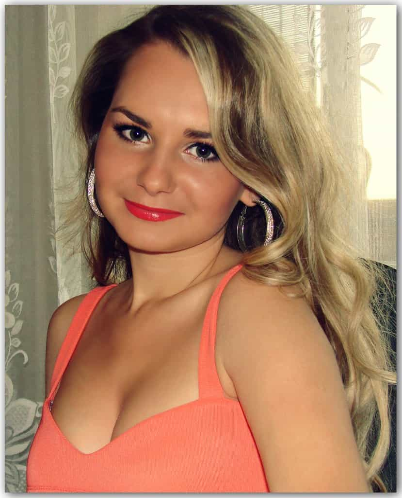
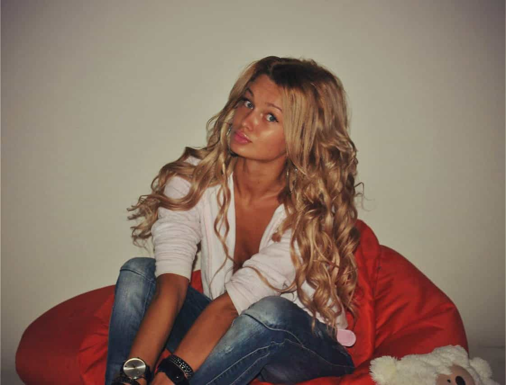
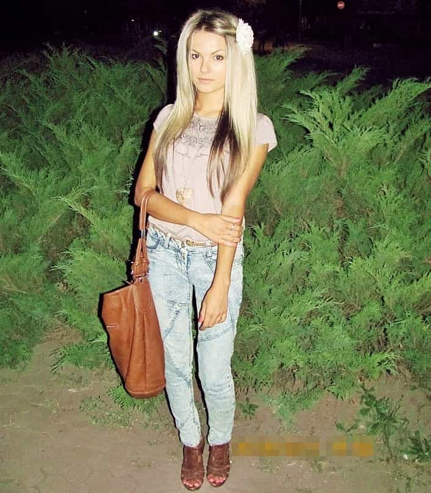
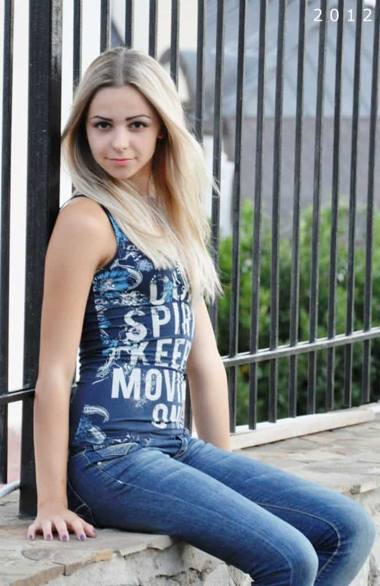
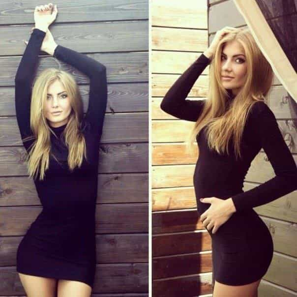
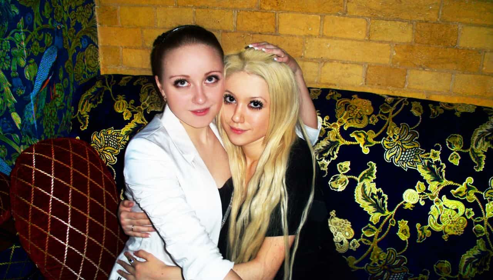
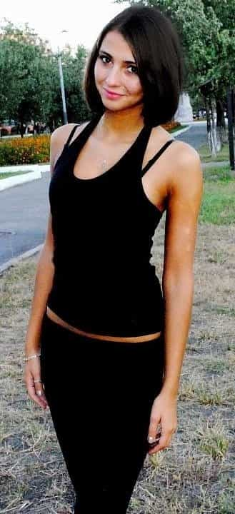

Daryush "Roosh" Valizadeh created ROK in October 2012. You can visit his blog at RooshV.com or follow him on Twitter and Facebook.


1.
2.

3.
4.

5.
6.
7.
8.

9.

10.

11.
12.
13.
14.

15.

16.
17.

18.
19.
20.
21.
22.
(my personal favorite)
23.
24.

25.
If you liked this post then you’ll like Bang Ukraine, my 103-page book that teaches you how to sleep with Ukrainian women during a visit to the country. It contains tourist tips, game advice, and sex stories that give you all the information you need to bang hyper-feminine Ukrainian women, with extra details not released on the blog. Click here to learn more about the book.